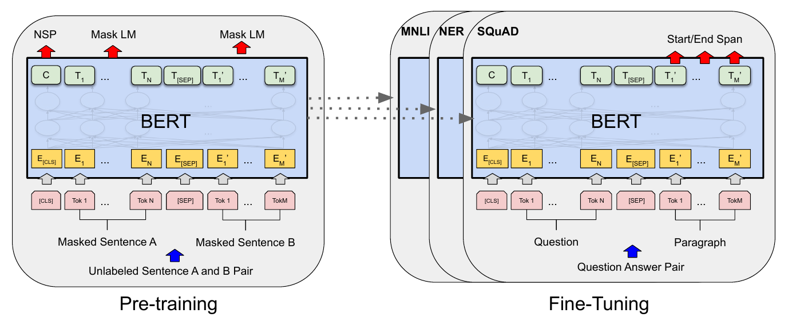
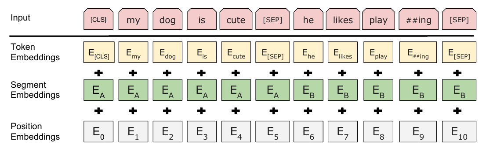
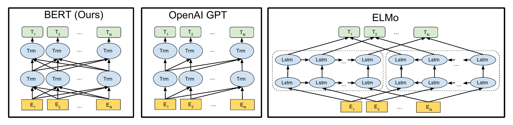
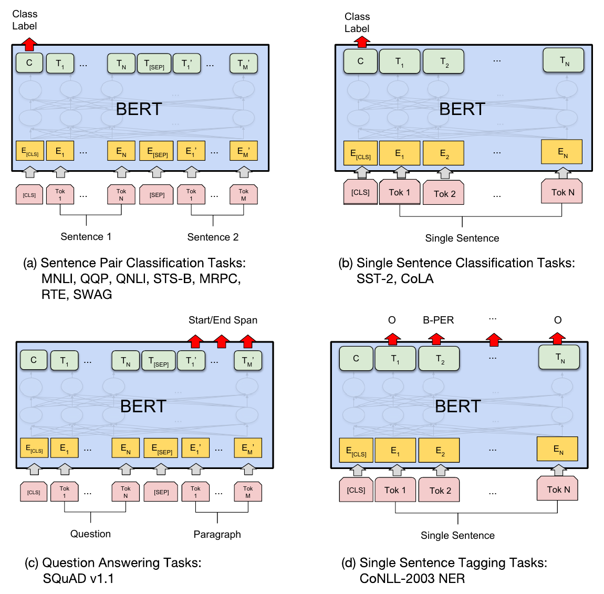
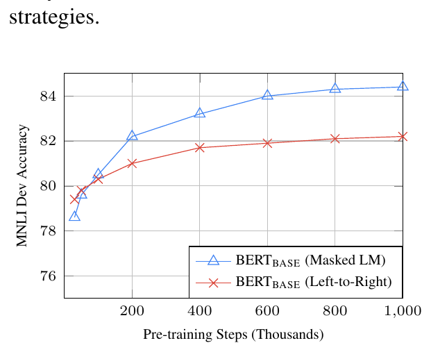

BERT：面向语言理解的深度双向 Transformer 预训练BERT: Pre-training of Deep Bidirectional Transformers for Language Understanding
我们提出一种新的语言表示模型，称为 BERT，它代表来自 Transformer 的双向编码器表示（Bidirectional Encoder Representations from Transformers）。与近来的语言表示模型 (Peters et al., 2018a; Radford et al., 2018) 不同，BERT 设计为在所有层上同时以左、右两侧的上下文为条件，从无标注文本中预训练深层双向表示。因此，预训练好的 BERT 模型只需再添加一个输出层进行微调（fine-tune），就能为问答、语言推断等广泛任务构建出当时最好的模型，而不需要对任务特定的架构做实质修改。
BERT 在概念上简单、在经验上有力。它在 11 项自然语言处理任务上取得了新的当时最好结果，包括把 GLUE 分数提升到 80.5%（绝对提升 7.7 个百分点）、MultiNLI 准确率提升到 86.7%（绝对提升 4.6）、SQuAD v1.1 问答的 Test F1 提升到 93.2（绝对提升 1.5），以及 SQuAD v2.0 的 Test F1 提升到 83.1（绝对提升 5.1）。
正文、图表与参考文献均来自源 PDF 解析结果。专业术语、模型名、数据集名、数据集条目名与人名按要求保留原文；术语上的金色虚线表示可悬停（触屏可点按）查看中文解释。参考文献整节保留英文原文不译。
1 引言
语言模型预训练已被证明能有效改善许多自然语言处理任务 (Dai and Le, 2015; Peters et al., 2018a; Radford et al., 2018; Howard and Ruder, 2018)。这些任务既包括句子级任务，如自然语言推断 (Bowman et al., 2015; Williams et al., 2018) 与复述 (Dolan and Brockett, 2005)——它们的目标是通过整体分析两个句子来预测句子之间的关系；也包括 token 级任务，如命名实体识别与问答——它们要求模型在 token 级别给出细粒度输出 (Tjong Kim Sang and De Meulder, 2003; Rajpurkar et al., 2016)。
把预训练语言表示应用到下游任务有两种已有策略：基于特征（feature-based）与微调（fine-tuning）。基于特征的方法（如 ELMo，Peters et al., 2018a）使用包含预训练表示作为额外特征的任务特定架构。微调方法（如生成式预训练 Transformer，OpenAI GPT，Radford et al., 2018）只引入极少的任务特定参数，通过直接微调全部预训练参数来在下游任务上训练。两种方法在预训练时共享同一个目标函数：都用单向语言模型来学习通用语言表示。
我们认为，现有技术限制了预训练表示的能力，对微调方法尤其如此。主要限制在于标准语言模型是单向的，这限制了预训练时可用的架构选择。例如在 OpenAI GPT 中，作者使用从左到右的架构，每个 token 在 Transformer 的自注意力层中只能关注它之前的 token (Vaswani et al., 2017)。这类限制对句子级任务而言是次优的，而把基于微调的方法用于问答等 token 级任务时可能非常有害，因为这类任务必须同时融合两个方向的上下文。
在本文中，我们提出 BERT：来自 Transformer 的双向编码器表示，以改进基于微调的方法。BERT 借助一种「掩蔽语言模型」（masked language model，MLM）预训练目标，缓解了前述的单向性限制——该目标受完形填空任务（Cloze task，Taylor, 1953）启发。掩蔽语言模型随机掩蔽输入中的一些 token，目标仅根据上下文来预测被掩蔽词的原始词表 id。与从左到右的语言模型预训练不同，MLM 目标使表示能够融合左、右两侧上下文，从而让我们可以预训练一个深层双向 Transformer。除掩蔽语言模型之外，我们还使用「下一句预测」（next sentence prediction）任务来联合预训练文本对表示。本文的贡献如下：
- 我们证明双向预训练对语言表示很重要。与用单向语言模型做预训练的 Radford et al. (2018) 不同，BERT 使用掩蔽语言模型来实现预训练的深层双向表示。这也与 Peters et al. (2018a) 形成对比——后者使用独立训练的从左到右和从右到左语言模型的浅层拼接。
- 我们表明预训练表示降低了对许多重度工程化的任务特定架构的需求。BERT 是第一个在大量句子级与 token 级任务上取得当时最好性能的、基于微调的表示模型，超过了许多任务特定架构。
- BERT 推进了 11 项 NLP 任务的最好水平。代码与预训练模型见 https://github.com/google-research/bert。
2 相关工作
预训练通用语言表示有很长的历史，本节简要回顾最广泛使用的方法。
2.1 无监督的基于特征方法
学习广泛适用的词表示数十年来一直是活跃的研究领域，包括非神经网络方法 (Brown et al., 1992; Ando and Zhang, 2005; Blitzer et al., 2006) 与神经网络方法 (Mikolov et al., 2013; Pennington et al., 2014)。预训练词嵌入是现代 NLP 系统不可分割的一部分，相比从零开始学习的嵌入带来显著改进 (Turian et al., 2010)。为预训练词嵌入向量，人们使用过从左到右的语言建模目标 (Mnih and Hinton, 2009)，也使用过在左右上下文中区分正确词与错误词的目标 (Mikolov et al., 2013)。
这些方法已被推广到更粗的粒度，例如句子嵌入 (Kiros et al., 2015; Logeswaran and Lee, 2018) 或段落嵌入 (Le and Mikolov, 2014)。为训练句子表示，先前工作使用过对候选下一句排序的目标 (Jernite et al., 2017; Logeswaran and Lee, 2018)、在给定前一句表示的条件下从左到右生成下一句词的目标 (Kiros et al., 2015)，或由去噪自编码器导出的目标 (Hill et al., 2016)。
ELMo 及其前身 (Peters et al., 2017, 2018a) 沿另一个维度推广了传统词嵌入研究。它们从一个从左到右和一个从右到左的语言模型中提取对上下文敏感的特征。每个 token 的上下文表示是这两个方向表示的拼接。在把上下文词嵌入与现有任务特定架构整合时，ELMo 在若干主要 NLP 基准上推进了最好水平 (Peters et al., 2018a)，包括问答 (Rajpurkar et al., 2016)、情感分析 (Socher et al., 2013) 与命名实体识别 (Tjong Kim Sang and De Meulder, 2003)。Melamud et al. (2016) 提出用一个「从左右上下文预测单个词」的任务、借助 LSTM 学习上下文表示。与 ELMo 类似，他们的模型是基于特征的，且并非深层双向。Fedus et al. (2018) 表明完形填空任务可用于提升文本生成模型的鲁棒性。
2.2 无监督的微调方法
与基于特征的方法一样，这一方向的早期工作也只是从无标注文本预训练词嵌入参数 (Collobert and Weston, 2008)。
更近期，产生上下文 token 表示的句子或文档编码器从无标注文本预训练，再针对有监督的下游任务微调 (Dai and Le, 2015; Howard and Ruder, 2018; Radford et al., 2018)。这类方法的优势在于需要从零学习的参数很少。至少部分由于这一优势，OpenAI GPT (Radford et al., 2018) 在 GLUE 基准 (Wang et al., 2018a) 的许多句子级任务上取得了此前最好的结果。从左到右的语言建模与自编码器目标都被用于预训练这类模型 (Howard and Ruder, 2018; Radford et al., 2018; Dai and Le, 2015)。

2.3 从有监督数据做迁移学习
也有工作表明可以从大数据集的有监督任务中有效迁移，例如自然语言推断 (Conneau et al., 2017) 与机器翻译 (McCann et al., 2017)。计算机视觉研究同样证明了从大型预训练模型做迁移学习的重要性，其中一条有效做法是对用 ImageNet 预训练的模型进行微调 (Deng et al., 2009; Yosinski et al., 2014)。
3 BERT
本节介绍 BERT 及其详细实现。我们的框架分两步：预训练与微调。预训练阶段，模型在不同预训练任务上、用无标注数据训练。微调时，BERT 模型先用预训练参数初始化，再用下游任务的有标注数据微调全部参数。每个下游任务都有各自微调后的模型，尽管它们都用同一套预训练参数初始化。图 1 中的问答示例将作为本节贯穿始终的例子。
BERT 的一个显著特点是它对不同任务使用统一架构。预训练架构与最终的下游架构之间差别极小。
模型架构 BERT 的模型架构是一个多层双向 Transformer 编码器，基于 Vaswani et al. (2017) 所述的原始实现，并在 tensor2tensor 库中发布1。由于 Transformer 的使用已很普遍、且我们的实现与原始版本几乎一致，我们将省略对模型架构的详尽背景描述，请读者参阅 Vaswani et al. (2017) 以及「The Annotated Transformer」等优秀指南2。
在本工作中，我们用 L 表示层数（即 Transformer block 数）、H 表示隐藏层大小、A 表示自注意力头的数量3。我们主要报告两种模型规模的结果：BERTBASE（L=12，H=768，A=12，总参数量 110M）与 BERTLARGE（L=24，H=1024，A=16，总参数量 340M）。
为便于比较，BERT 被选为与 OpenAI GPT 相同的模型规模。但关键在于，BERT 的 Transformer 使用双向自注意力，而 GPT 的 Transformer 使用受限自注意力，每个 token 只能关注其左侧的上下文4。
输入/输出表示 为使 BERT 能处理多种下游任务，我们的输入表示能够在一个 token 序列中无歧义地表示单个句子和句子对（例如 ⟨问题, 答案⟩）。在本文中，「句子」可以是任意一段连续文本，而不必是语言学意义上的句子。「序列」指 BERT 的输入 token 序列，它可以是单个句子，也可以是打包在一起的两个句子。
我们使用 WordPiece 嵌入 (Wu et al., 2016)，词表大小为 30,000 个 token。每个序列的第一个 token 始终是特殊的分类 token（[CLS]）。该 token 对应的最终隐藏状态被用作分类任务的聚合序列表示。句子对被打包进单个序列。我们用两种方式区分两个句子。第一，用特殊 token（[SEP]）分隔它们。第二，给每个 token 加一个可学习的嵌入，表明它属于句子 A 还是句子 B。如图 1 所示，我们把输入嵌入记为 E，把特殊 [CLS] token 的最终隐藏向量记为 C ∈ ℝH，把第 i 个输入 token 的最终隐藏向量记为 Ti ∈ ℝH。
对给定的 token，其输入表示由相应的 token 嵌入、片段嵌入与位置嵌入相加构成。图 2 给出了这种构造的可视化。

3.1 预训练 BERT
与 Peters et al. (2018a) 和 Radford et al. (2018) 不同，我们不使用传统的从左到右或从右到左的语言模型来预训练 BERT。取而代之，我们用两个无监督任务预训练 BERT，本节加以描述。这一步展示在图 1 的左半部分。
任务 #1：掩蔽 LM（Masked LM） 直观上，可以合理地认为深层双向模型严格强于从左到右模型，也强于从左到右与从右到左模型的浅层拼接。遗憾的是，标准条件语言模型只能从左到右或从右到左训练，因为双向条件会让每个词间接「看到自己」，模型在多层的上下文中可以平凡地预测目标词。
为训练深层双向表示，我们简单地随机掩蔽输入中一定比例的 token，然后预测这些被掩蔽的 token。我们把这一过程称为「掩蔽 LM」（MLM），文献中它常被称为完形填空任务 (Taylor, 1953)。此时，与掩蔽 token 对应的最终隐藏向量被送入词表上的输出 softmax，正如标准语言模型那样。在我们所有实验中，我们随机掩蔽每个序列中 15% 的 WordPiece token。与去噪自编码器 (Vincent et al., 2008) 不同，我们只预测被掩蔽的词，而不重建整个输入。
虽然这让我们能得到双向预训练模型，但一个缺点是：由于 [MASK] token 在微调时并不出现，我们制造了预训练与微调之间的不匹配。为缓解这一点，我们并不总是用真正的 [MASK] token 替换「被掩蔽」的词。训练数据生成器随机选择 15% 的 token 位置用于预测。如果第 i 个 token 被选中，我们按以下方式替换第 i 个 token：(1) 80% 的时间替换为 [MASK] token；(2) 10% 的时间替换为一个随机 token；(3) 10% 的时间保持第 i 个 token 不变。然后，用 Ti 以交叉熵损失预测原始 token。我们在附录 C.2 中比较了这一过程的不同变体。
任务 #2：下一句预测（NSP） 许多重要的下游任务，如问答（QA）与自然语言推断（NLI），都建立在理解两个句子之间关系的基础上，而语言建模并不能直接捕捉这种关系。为训练一个理解句子关系的模型，我们预训练一个二分类的下一句预测任务，它可以由任意单语语料平凡地生成。具体地说，在为每个预训练样例选择句子 A 和 B 时，50% 的时间 B 是紧随 A 之后的真实下一句（标记为 IsNext），50% 的时间它是语料中的随机句子（标记为 NotNext）。如图 1 所示，C 被用于下一句预测（NSP）5。尽管它很简单，我们在 5.1 节表明朝这一任务预训练对 QA 与 NLI 都非常有益6。
NSP 任务与 Jernite et al. (2017) 和 Logeswaran and Lee (2018) 中使用的表示学习目标密切相关。不过在先前工作中，只有句子嵌入被迁移到下游任务，而 BERT 会把所有参数都迁移过去以初始化端任务模型参数。
预训练数据 预训练过程大体遵循语言模型预训练的既有文献。预训练语料我们使用 BooksCorpus（8 亿词）(Zhu et al., 2015) 与英文 Wikipedia（25 亿词）。对 Wikipedia，我们只提取正文段落，忽略列表、表格与标题。为了抽取长连续序列，使用文档级语料而不是打乱顺序的句子级语料（如 Billion Word Benchmark，Chelba et al., 2013）至关重要。
3.2 微调 BERT
微调很直接，因为 Transformer 中的自注意力机制允许 BERT 通过替换相应的输入与输出来建模许多下游任务——无论它们涉及单段文本还是文本对。对涉及文本对的应用，一种常见模式是先把文本对分别编码，再施加双向交叉注意力，如 Parikh et al. (2016)、Seo et al. (2017)。BERT 相反，用自注意力机制统一这两个阶段，因为用自注意力编码一个拼接后的文本对，实际上就包含了两个句子之间的双向交叉注意力。
对每个任务，我们只需把任务特定的输入与输出接入 BERT，并端到端地微调所有参数。在输入侧，预训练中的句子 A 与句子 B 分别对应：(1) 复述任务中的句子对；(2) 蕴含任务中的假设—前提对；(3) 问答任务中的问题—段落对；(4) 文本分类或序列标注中的退化「文本—∅」对。在输出侧，token 表示被送入输出层用于 token 级任务，如序列标注或问答；[CLS] 表示被送入输出层用于分类，如蕴含或情感分析。
与预训练相比，微调相对便宜。从完全相同的预训练模型出发，本文所有结果都可以在单块 Cloud TPU 上最多 1 小时（或在 GPU 上数小时）内复现7。我们在第 4 章相应小节描述任务特定的细节。更多细节见附录 A.5。
1 https://github.com/tensorflow/tensor2tensor
2 http://nlp.seas.harvard.edu/2018/04/03/attention.html
3 在所有情况下我们取前馈/滤波层大小为 4H，即 H = 768 时为 3072，H = 1024 时为 4096。
4 我们注意到，在文献中双向 Transformer 常被称为「Transformer 编码器」，而只使用左侧上下文的版本被称为「Transformer 解码器」，因为它可用于文本生成。
5 最终模型在 NSP 上达到 97%–98% 的准确率。
6 未经微调时，向量 C 并不是一个有意义的句子表示，因为它是用 NSP 训练的。
7 例如，BERT 的 SQuAD 模型可以在单块 Cloud TPU 上约 30 分钟内训练完成，达到 91.0% 的 Dev F1。
4 实验
本节我们给出 BERT 在 11 项 NLP 任务上的微调结果。
4.1 GLUE
通用语言理解评估（GLUE）基准 (Wang et al., 2018a) 汇集了多样的自然语言理解任务。GLUE 数据集的详细描述见附录 B.1。
为在 GLUE 上微调，我们按第 3 节所述表示输入序列（单句或句子对），并用第一个输入 token（[CLS]）对应的最终隐藏向量 C ∈ ℝH 作为聚合表示。微调期间引入的唯一新参数是分类层权重 W ∈ ℝK×H，其中 K 是标签数。我们用 C 与 W 计算标准分类损失，即 log(softmax(CWT))。
| 系统 | MNLI-(m/mm) 392k |
QQP 363k |
QNLI 108k |
SST-2 67k |
CoLA 8.5k |
STS-B 5.7k |
MRPC 3.5k |
RTE 2.5k |
Average |
| Pre-OpenAI SOTA | 80.6/80.1 | 66.1 | 82.3 | 93.2 | 35.0 | 81.0 | 86.0 | 61.7 | 74.0 |
| BiLSTM+ELMo+Attn | 76.4/76.1 | 64.8 | 79.8 | 90.4 | 36.0 | 73.3 | 84.9 | 56.8 | 71.0 |
| OpenAI GPT | 82.1/81.4 | 70.3 | 87.4 | 91.3 | 45.4 | 80.0 | 82.3 | 56.0 | 75.1 |
| BERTBASE | 84.6/83.4 | 71.2 | 90.5 | 93.5 | 52.1 | 85.8 | 88.9 | 66.4 | 79.6 |
| BERTLARGE | 86.7/85.9 | 72.1 | 92.7 | 94.9 | 60.5 | 86.5 | 89.3 | 70.1 | 82.1 |
表 1 GLUE 测试结果，由评测服务器打分（https://gluebenchmark.com/leaderboard）。每个任务下方数字表示训练样例数。「Average」列与官方 GLUE 分数略有不同，因为我们排除了有问题的 WNLI 集合8。BERT 与 OpenAI GPT 均为单模型、单任务。QQP 与 MRPC 报告 F1，STS-B 报告 Spearman 相关系数，其他任务报告准确率。我们排除了把 BERT 用作组件之一的条目。
我们对所有 GLUE 任务使用批量大小 32，在数据上微调 3 个 epoch。对每个任务，我们在 Dev 集上选择最佳的微调学习率（在 5e-5、4e-5、3e-5、2e-5 中选）。此外，对 BERTLARGE 我们发现微调在小数据集上有时不稳定，因此我们做了若干次随机重启，并在 Dev 集上选择最好的模型。随机重启时，我们使用相同的预训练检查点，但进行不同的微调数据打乱与分类层初始化9。
结果列于表 1。BERTBASE 与 BERTLARGE 都以显著幅度在所有任务上超过所有系统，平均准确率相对此前的最好水平分别提高 4.5% 与 7.0%。注意 BERTBASE 与 OpenAI GPT 在模型架构上几乎完全相同，只差注意力掩蔽方式。对最大、被报告最多的 GLUE 任务 MNLI，BERT 取得 4.6% 的绝对准确率提升。在官方 GLUE 排行榜上10，BERT 取得 80.5 分，而 OpenAI GPT 在本文写作时得到 72.8。
我们发现 BERTLARGE 在所有任务上都显著优于 BERTBASE，尤其是在训练数据很少的任务上。模型规模的影响在 5.2 节中做了更充分的探讨。
4.2 SQuAD v1.1
斯坦福问答数据集（SQuAD v1.1）是 10 万条众包问答对的集合 (Rajpurkar et al., 2016)。给定一个问题，以及一段包含答案的 Wikipedia 段落，任务是在段落中预测答案文本片段。
如图 1 所示，在问答任务中，我们把输入的问题与段落表示为打包后的单个序列，问题使用 A 嵌入、段落使用 B 嵌入。微调时我们只引入一个起始向量 S ∈ ℝH 和一个结束向量 E ∈ ℝH。词 i 是答案片段起点的概率由 Ti 与 S 的点积、再对段落中所有词做 softmax 计算得到：
变量说明：Ti 是段落中第 i 个 token 的最终隐藏向量；S 是微调时新引入的可学习「起点向量」；S·Ti 是二者的点积（一个标量得分）；分母对所有词 j 求和，因此 Pi 是「第 i 个词是答案起点」的归一化概率。答案片段终点用完全类似的公式（把 S 换成终点向量 E）。
答案片段的终点用类似公式。从位置 i 到位置 j 的候选片段得分为 S·Ti + E·Tj，取 j ≥ i 中得分最高的片段作为预测。训练目标是正确的起点与终点位置的对数似然之和。我们用学习率 5e-5、批量大小 32 微调 3 个 epoch。
| 系统 | Dev | Test | ||
| EM | F1 | EM | F1 | |
| 排行榜前列系统（2018 年 12 月 10 日） | ||||
| Human | - | - | 82.3 | 91.2 |
| #1 Ensemble - nlnet | - | - | 86.0 | 91.7 |
| #2 Ensemble - QANet | - | - | 84.5 | 90.5 |
| 已发表 | ||||
| BiDAF+ELMo (Single) | - | 85.6 | - | 85.8 |
| R.M. Reader (Ensemble) | 81.2 | 87.9 | 82.3 | 88.5 |
| 本文（Ours） | ||||
| BERTBASE (Single) | 80.8 | 88.5 | - | - |
| BERTLARGE (Single) | 84.1 | 90.9 | - | - |
| BERTLARGE (Ensemble) | 85.8 | 91.8 | - | - |
| BERTLARGE (Sgl.+TriviaQA) | 84.2 | 91.1 | 85.1 | 91.8 |
| BERTLARGE (Ens.+TriviaQA) | 86.2 | 92.2 | 87.4 | 93.2 |
表 2 SQuAD 1.1 结果。BERT 集成由 7 个使用不同预训练检查点与微调随机种子的系统组成。
表 2 给出了排行榜前列条目以及已发表顶级系统的结果 (Seo et al., 2017; Clark and Gardner, 2018; Peters et al., 2018a; Hu et al., 2018)。SQuAD 排行榜上的最好结果没有最新的公开系统描述11，且其训练时被允许使用任意公开数据。因此我们在系统中使用了适度的数据增强：先在 TriviaQA (Joshi et al., 2017) 上微调，再在 SQuAD 上微调。
我们表现最好的系统在集成设置下比排行榜最好系统高 +1.5 F1，单模型设置下高 +1.3 F1。事实上，我们的单个 BERT 模型在 F1 上超过了最好的集成系统。不使用 TriviaQA 微调数据时，我们只损失 0.1–0.4 F1，仍然以很大幅度超过所有现有系统12。
4.3 SQuAD v2.0
SQuAD 2.0 任务扩展了 SQuAD 1.1 的问题定义，允许所给段落中不存在简短答案，使问题更贴近实际。
我们用一个简单方法来把 SQuAD v1.1 的 BERT 模型扩展到该任务。我们把没有答案的问题视为答案片段起点与终点都在 [CLS] token 上。起点与终点位置的概率空间被扩展以包含 [CLS] token 的位置。预测时，我们把「无答案」片段的得分 snull = S·C + E·C 与最好的非空片段得分 si,j = maxj≥i S·Ti + E·Tj 进行比较。当 si,j > snull + τ 时我们预测一个非空答案，其中阈值 τ 在 Dev 集上选取以最大化 F1。该模型我们未使用 TriviaQA 数据。我们以学习率 5e-5、批量大小 48 微调 2 个 epoch。
| 系统 | Dev | Test | ||
| EM | F1 | EM | F1 | |
| 排行榜前列系统（2018 年 12 月 10 日） | ||||
| Human | 86.3 | 89.0 | 86.9 | 89.5 |
| #1 Single - MIR-MRC (F-Net) | - | - | 74.8 | 78.0 |
| #2 Single - nlnet | - | - | 74.2 | 77.1 |
| 已发表 | ||||
| unet (Ensemble) | - | - | 71.4 | 74.9 |
| SLQA+ (Single) | - | 71.4 | 74.4 | |
| 本文（Ours） | ||||
| BERTLARGE (Single) | 78.7 | 81.9 | 80.0 | 83.1 |
表 3 SQuAD 2.0 结果。我们排除了把 BERT 用作组件之一的条目。
与先前排行榜条目与顶级已发表工作 (Sun et al., 2018; Wang et al., 2018b) 的比较见表 3，其中排除了把 BERT 作为组件之一的系统。我们观察到相对此前最好系统有 +5.1 F1 的提升。
4.4 SWAG
对抗生成情境（SWAG）数据集包含 113k 个句子对补全样例，用于评估有据常识推断 (Zellers et al., 2018)。给定一个句子，任务是在四个选项中选出最合理的续写。
在 SWAG 数据集上微调时，我们构造四个输入序列，每个序列由给定句子（句子 A）与一个可能的续写（句子 B）拼接而成。引入的唯一任务特定参数是一个向量，它与 [CLS] token 表示 C 的点积表示每个选项的得分，并用 softmax 层归一化。
我们以学习率 2e-5、批量大小 16 微调模型 3 个 epoch。结果见表 4。BERTLARGE 比作者给出的基线 ESIM+ELMo 系统高 +27.1%，比 OpenAI GPT 高 8.3%。
| 系统 | Dev | Test |
| ESIM+GloVe | 51.9 | 52.7 |
| ESIM+ELMo | 59.1 | 59.2 |
| OpenAI GPT | - | 78.0 |
| BERTBASE | 81.6 | - |
| BERTLARGE | 86.6 | 86.3 |
| Human (expert)† | - | 85.0 |
| Human (5 annotations)† | - | 88.0 |
表 4 SWAG 的 Dev 与 Test 准确率。†人类表现是用 100 个样本测得的，如 SWAG 论文所述。
8 见 https://gluebenchmark.com/faq 中的第 (10) 条。
9 GLUE 数据集的发布中不包含 Test 标签，我们对 BERTBASE 与 BERTLARGE 各只向 GLUE 评测服务器提交了一次。
10 https://gluebenchmark.com/leaderboard
11 QANet 在 Yu et al. (2018) 中有描述，但该系统在论文发表后已有大幅改进。
12 我们使用的 TriviaQA 数据由 TriviaQA-Wiki 的段落构成，取文档中前 400 个 token，且其中至少包含一个所提供可能答案。
5 消融研究
本节我们对 BERT 的若干方面做消融实验，以更好地理解它们的相对重要性。更多消融研究见附录 C。
| 任务 | Dev 集 | ||||
| MNLI-m (Acc) | QNLI (Acc) | MRPC (Acc) | SST-2 (Acc) | SQuAD (F1) | |
| BERTBASE | 84.4 | 88.4 | 86.7 | 92.7 | 88.5 |
| No NSP | 83.9 | 84.9 | 86.5 | 92.6 | 87.9 |
| LTR & No NSP | 82.1 | 84.3 | 77.5 | 92.1 | 77.8 |
| + BiLSTM | 82.1 | 84.1 | 75.7 | 91.6 | 84.9 |
表 5 用 BERTBASE 架构对预训练任务做消融。「No NSP」是不使用下一句预测任务训练的。「LTR & No NSP」像 OpenAI GPT 那样作为从左到右的 LM 训练、且不使用下一句预测。「+ BiLSTM」在微调时于 LTR + No NSP 模型之上加一个随机初始化的 BiLSTM。
5.1 预训练任务的影响
我们通过用与 BERTBASE 完全相同的预训练数据、微调方案与超参数评估两个预训练目标，来证明 BERT 深层双向性的重要性：
No NSP：一个使用「掩蔽 LM」（MLM）但没有「下一句预测」（NSP）任务训练的双向模型。
LTR & No NSP：一个只使用左侧上下文的模型，用标准的从左到右（LTR）LM 而不是 MLM 训练。只使用左侧这一约束在微调时也被施加，因为去掉它会引入预训练/微调不匹配，从而损害下游性能。此外，该模型在没有 NSP 任务的情况下预训练。它与 OpenAI GPT 直接可比，但我们使用了更大的训练数据集、我们的输入表示以及我们的微调方案。
我们首先考察 NSP 任务带来的影响。在表 5 中，我们看到去掉 NSP 会显著损害 QNLI、MNLI 和 SQuAD 1.1 上的性能。接下来，我们通过比较「No NSP」与「LTR & No NSP」来评估双向表示训练的影响。LTR 模型在所有任务上都比 MLM 模型差，在 MRPC 与 SQuAD 上下降尤为明显。
对 SQuAD 而言，直观上很清楚：LTR 模型在 token 预测上表现会较差，因为 token 级的隐藏状态没有右侧上下文。为了诚实地尝试增强 LTR 系统，我们在其上又加了一个随机初始化的 BiLSTM。这确实显著改善了 SQuAD 的结果，但仍远差于预训练双向模型的结果。BiLSTM 反而损害了 GLUE 任务上的性能。
我们认识到，也可以训练彼此独立的 LTR 与 RTL 模型，并把每个 token 表示为两个模型输出的拼接，就像 ELMo 那样。然而：(a) 这比单个双向模型贵一倍；(b) 对 QA 这类任务不直观，因为 RTL 模型无法以问题为条件来生成答案；(c) 它严格弱于深层双向模型，因为后者在每一层都能同时利用左右上下文。
5.2 模型规模的影响
本节我们探讨模型规模对微调任务准确率的影响。我们训练了若干层数、隐藏单元数与注意力头数不同的 BERT 模型，其他方面沿用与前述相同的超参数与训练过程。
选定 GLUE 任务上的结果见表 6。表中我们报告 5 次随机重启微调的 Dev 集平均准确率。可以看到，更大的模型在全部四个数据集上带来一致的准确率提升，即使 MRPC 只有 3,600 个有标注训练样例、且与预训练任务差别很大也是如此。也许同样令人惊讶的是，在相对既有文献已经相当大的模型之上，我们仍能取得如此显著的改进。例如 Vaswani et al. (2017) 中探索的最大 Transformer 是 (L=6, H=1024, A=16)，编码器有 100M 参数；而我们在文献中找到的最大 Transformer 是 (L=64, H=512, A=2)，有 235M 参数 (Al-Rfou et al., 2018)。相比之下，BERTBASE 有 110M 参数，BERTLARGE 有 340M 参数。
人们早就知道，增大模型规模会在大规模任务（如机器翻译与语言建模）上带来持续改进——表 6 中留出训练数据的 LM 困惑度也说明了这一点。然而我们相信，这是第一项令人信服地证明「扩展到极端模型规模也能在极小规模任务上带来大幅改进」的工作，前提是模型已被充分预训练。Peters et al. (2018b) 在把预训练 bi-LM 规模从两层增加到四层时，对下游任务的影响给出了混合的结果；Melamud et al. (2016) 顺带提到把隐藏维度从 200 增到 600 有帮助，但继续增到 1,000 没有带来进一步改进。这两项先前工作都使用基于特征的方法——我们推测，当模型直接在下游任务上微调、并且只使用极少量随机初始化的额外参数时，即使下游任务数据非常少，任务特定模型也能从更大、表达力更强的预训练表示中获益。
| 超参数 | Dev 集准确率 | |||||
| #L | #H | #A | LM (ppl) | MNLI-m | MRPC | SST-2 |
| 3 | 768 | 12 | 5.84 | 77.9 | 79.8 | 88.4 |
| 6 | 768 | 3 | 5.24 | 80.6 | 82.2 | 90.7 |
| 6 | 768 | 12 | 4.68 | 81.9 | 84.8 | 91.3 |
| 12 | 768 | 12 | 3.99 | 84.4 | 86.7 | 92.9 |
| 12 | 1024 | 16 | 3.54 | 85.7 | 86.9 | 93.3 |
| 24 | 1024 | 16 | 3.23 | 86.6 | 87.8 | 93.7 |
表 6 对 BERT 模型规模的消融。#L = 层数；#H = 隐藏层大小；#A = 注意力头数。「LM (ppl)」是留出训练数据的掩蔽 LM 困惑度。
5.3 基于特征方法的 BERT
到目前为止给出的所有 BERT 结果都使用微调方法：在预训练模型上加一个简单的分类层，并在下游任务上联合微调所有参数。然而，基于特征的方法——即从预训练模型中提取固定特征——具有某些优势。第一，并非所有任务都能方便地用 Transformer 编码器架构表示，因此需要额外添加任务特定模型架构。第二，一次性预先计算训练数据的昂贵表示、然后在其上用更便宜的模型做大量实验，有可观的算力优势。
本节我们通过把 BERT 用于 CoNLL-2003 命名实体识别（NER）任务 (Tjong Kim Sang and De Meulder, 2003) 来比较两种方法。在 BERT 的输入中，我们使用保留大小写的 WordPiece 模型，并包含数据能提供的最大文档上下文。按标准做法，我们把它表述为标注任务，但输出不使用 CRF 层。我们用第一个子 token 的表示作为 token 级分类器在 NER 标签集上的输入。
为对微调方法做消融，我们应用基于特征的方法：从一层或多层中提取激活，而不微调 BERT 的任何参数。这些上下文嵌入被用作随机初始化的两层 768 维 BiLSTM 的输入，之后接分类层。
结果见表 7。BERTLARGE 的表现与当时最好的方法相当。表现最好的方法把预训练 Transformer 顶部四个隐藏层的 token 表示拼接起来，只比微调整个模型低 0.3 F1。这表明 BERT 对微调与基于特征两种方法都有效。
| 系统 | Dev F1 | Test F1 |
| ELMo (Peters et al., 2018a) | 95.7 | 92.2 |
| CVT (Clark et al., 2018) | - | 92.6 |
| CSE (Akbik et al., 2018) | - | 93.1 |
| 微调方法（Fine-tuning approach） | ||
| BERTLARGE | 96.6 | 92.8 |
| BERTBASE | 96.4 | 92.4 |
| 基于特征的方法（BERTBASE） | ||
| Embeddings | 91.0 | - |
| Second-to-Last Hidden | 95.6 | - |
| Last Hidden | 94.9 | - |
| Weighted Sum Last Four Hidden | 95.9 | - |
| Concat Last Four Hidden | 96.1 | - |
| Weighted Sum All 12 Layers | 95.5 | - |
表 7 CoNLL-2003 命名实体识别结果。超参数用 Dev 集选择。报告的 Dev 与 Test 分数是用这些超参数做 5 次随机重启的平均。
6 结论
近期因语言模型迁移学习而取得的经验性改进表明，丰富的无监督预训练是许多语言理解系统不可分割的一部分。特别地，这些结果使低资源任务也能从深层单向架构中获益。我们的主要贡献是进一步把这些发现推广到深层双向架构，使同一个预训练模型能够成功应对广泛的一类 NLP 任务。
参考文献
按要求，参考文献整节保留英文原文，未作翻译。
- Alan Akbik, Duncan Blythe, and Roland Vollgraf. 2018. Contextual string embeddings for sequence labeling. In Proceedings of the 27th International Conference on Computational Linguistics, pages 1638–1649.
- Rami Al-Rfou, Dokook Choe, Noah Constant, Mandy Guo, and Llion Jones. 2018. Character-level language modeling with deeper self-attention. arXiv preprint arXiv:1808.04444.
- Rie Kubota Ando and Tong Zhang. 2005. A framework for learning predictive structures from multiple tasks and unlabeled data. Journal of Machine Learning Research, 6(Nov):1817–1853.
- Luisa Bentivogli, Bernardo Magnini, Ido Dagan, Hoa Trang Dang, and Danilo Giampiccolo. 2009. The fifth PASCAL recognizing textual entailment challenge. In TAC. NIST.
- John Blitzer, Ryan McDonald, and Fernando Pereira. 2006. Domain adaptation with structural correspondence learning. In Proceedings of the 2006 conference on empirical methods in natural language processing, pages 120–128. Association for Computational Linguistics.
- Samuel R. Bowman, Gabor Angeli, Christopher Potts, and Christopher D. Manning. 2015. A large annotated corpus for learning natural language inference. In EMNLP. Association for Computational Linguistics.
- Peter F Brown, Peter V Desouza, Robert L Mercer, Vincent J Della Pietra, and Jenifer C Lai. 1992. Class-based n-gram models of natural language. Computational linguistics, 18(4):467–479.
- Daniel Cer, Mona Diab, Eneko Agirre, Inigo Lopez-Gazpio, and Lucia Specia. 2017. Semeval-2017 task 1: Semantic textual similarity multilingual and crosslingual focused evaluation. In Proceedings of the 11th International Workshop on Semantic Evaluation (SemEval-2017), pages 1–14, Vancouver, Canada. Association for Computational Linguistics.
- Ciprian Chelba, Tomas Mikolov, Mike Schuster, Qi Ge, Thorsten Brants, Phillipp Koehn, and Tony Robinson. 2013. One billion word benchmark for measuring progress in statistical language modeling. arXiv preprint arXiv:1312.3005.
- Z. Chen, H. Zhang, X. Zhang, and L. Zhao. 2018. Quora question pairs.
- Christopher Clark and Matt Gardner. 2018. Simple and effective multi-paragraph reading comprehension. In ACL.
- Kevin Clark, Minh-Thang Luong, Christopher D Manning, and Quoc Le. 2018. Semi-supervised sequence modeling with cross-view training. In Proceedings of the 2018 Conference on Empirical Methods in Natural Language Processing, pages 1914–1925.
- Ronan Collobert and Jason Weston. 2008. A unified architecture for natural language processing: Deep neural networks with multitask learning. In Proceedings of the 25th international conference on Machine learning, pages 160–167. ACM.
- Alexis Conneau, Douwe Kiela, Holger Schwenk, Loïc Barrault, and Antoine Bordes. 2017. Supervised learning of universal sentence representations from natural language inference data. In Proceedings of the 2017 Conference on Empirical Methods in Natural Language Processing, pages 670–680, Copenhagen, Denmark. Association for Computational Linguistics.
- Andrew M Dai and Quoc V Le. 2015. Semi-supervised sequence learning. In Advances in neural information processing systems, pages 3079–3087.
- J. Deng, W. Dong, R. Socher, L.-J. Li, K. Li, and L. Fei-Fei. 2009. ImageNet: A Large-Scale Hierarchical Image Database. In CVPR09.
- William B Dolan and Chris Brockett. 2005. Automatically constructing a corpus of sentential paraphrases. In Proceedings of the Third International Workshop on Paraphrasing (IWP2005).
- William Fedus, Ian Goodfellow, and Andrew M Dai. 2018. Maskgan: Better text generation via filling in the _. arXiv preprint arXiv:1801.07736.
- Dan Hendrycks and Kevin Gimpel. 2016. Bridging nonlinearities and stochastic regularizers with gaussian error linear units. CoRR, abs/1606.08415.
- Felix Hill, Kyunghyun Cho, and Anna Korhonen. 2016. Learning distributed representations of sentences from unlabelled data. In Proceedings of the 2016 Conference of the North American Chapter of the Association for Computational Linguistics: Human Language Technologies. Association for Computational Linguistics.
- Jeremy Howard and Sebastian Ruder. 2018. Universal language model fine-tuning for text classification. In ACL. Association for Computational Linguistics.
- Minghao Hu, Yuxing Peng, Zhen Huang, Xipeng Qiu, Furu Wei, and Ming Zhou. 2018. Reinforced mnemonic reader for machine reading comprehension. In IJCAI.
- Yacine Jernite Samuel R Bowman and David Sontag. 2017. Discourse-based objectives for fast unsupervised sentence representation learning. CoRR, abs/1705.00557.
- Mandar Joshi, Eunsol Choi, Daniel S Weld, and Luke Zettlemoyer. 2017. Triviaqa: A large scale distantly supervised challenge dataset for reading comprehension. In ACL.
- Ryan Kiros, Yukun Zhu, Ruslan R Salakhutdinov, Richard Zemel, Raquel Urtasun, Antonio Torralba, and Sanja Fidler. 2015. Skip-thought vectors. In Advances in neural information processing systems, pages 3294–3302.
- Quoc Le and Tomas Mikolov. 2014. Distributed representations of sentences and documents. In International Conference on Machine Learning, pages 1188–1196.
- Hector J Levesque, Ernest Davis, and Leora Morgenstern. 2011. The winograd schema challenge. In AAAI spring symposium: Logical formalizations of commonsense reasoning, volume 46, page 47.
- Lajanugen Logeswaran and Honglak Lee. 2018. An efficient framework for learning sentence representations. In International Conference on Learning Representations.
- Bryan McCann, James Bradbury, Caiming Xiong, and Richard Socher. 2017. Learned in translation: Contextualized word vectors. In NIPS.
- Oren Melamud, Jacob Goldberger, and Ido Dagan. 2016. context2vec: Learning generic context embedding with bidirectional LSTM. In CoNLL.
- Tomas Mikolov, Ilya Sutskever, Kai Chen, Greg S Corrado, and Jeff Dean. 2013. Distributed representations of words and phrases and their compositionality. In Advances in Neural Information Processing Systems 26, pages 3111–3119. Curran Associates, Inc.
- Andriy Mnih and Geoffrey E Hinton. 2009. A scalable hierarchical distributed language model. In D. Koller, D. Schuurmans, Y. Bengio, and L. Bottou, editors, Advances in Neural Information Processing Systems 21, pages 1081–1088. Curran Associates, Inc.
- Ankur P Parikh, Oscar Täckström, Dipanjan Das, and Jakob Uszkoreit. 2016. A decomposable attention model for natural language inference. In EMNLP.
- Jeffrey Pennington, Richard Socher, and Christopher D. Manning. 2014. Glove: Global vectors for word representation. In Empirical Methods in Natural Language Processing (EMNLP), pages 1532–1543.
- Matthew Peters, Waleed Ammar, Chandra Bhagavatula, and Russell Power. 2017. Semi-supervised sequence tagging with bidirectional language models. In ACL.
- Matthew Peters, Mark Neumann, Mohit Iyyer, Matt Gardner, Christopher Clark, Kenton Lee, and Luke Zettlemoyer. 2018a. Deep contextualized word representations. In NAACL.
- Matthew Peters, Mark Neumann, Luke Zettlemoyer, and Wen-tau Yih. 2018b. Dissecting contextual word embeddings: Architecture and representation. In Proceedings of the 2018 Conference on Empirical Methods in Natural Language Processing, pages 1499–1509.
- Alec Radford, Karthik Narasimhan, Tim Salimans, and Ilya Sutskever. 2018. Improving language understanding with unsupervised learning. Technical report, OpenAI.
- Pranav Rajpurkar, Jian Zhang, Konstantin Lopyrev, and Percy Liang. 2016. Squad: 100,000+ questions for machine comprehension of text. In Proceedings of the 2016 Conference on Empirical Methods in Natural Language Processing, pages 2383–2392.
- Minjoon Seo, Aniruddha Kembhavi, Ali Farhadi, and Hannaneh Hajishirzi. 2017. Bidirectional attention flow for machine comprehension. In ICLR.
- Richard Socher, Alex Perelygin, Jean Wu, Jason Chuang, Christopher D Manning, Andrew Ng, and Christopher Potts. 2013. Recursive deep models for semantic compositionality over a sentiment treebank. In Proceedings of the 2013 conference on empirical methods in natural language processing, pages 1631–1642.
- Fu Sun, Linyang Li, Xipeng Qiu, and Yang Liu. 2018. U-net: Machine reading comprehension with unanswerable questions. arXiv preprint 1810.06638.
- Wilson L Taylor. 1953. Cloze procedure: A new tool for measuring readability. Journalism Bulletin, 30(4):415–433.
- Erik F Tjong Kim Sang and Fien De Meulder. 2003. Introduction to the conll-2003 shared task: Language-independent named entity recognition. In CoNLL.
- Joseph Turian, Lev Ratinov, and Yoshua Bengio. 2010. Word representations: A simple and general method for semi-supervised learning. In Proceedings of the 48th Annual Meeting of the Association for Computational Linguistics, ACL '10, pages 384–394.
- Ashish Vaswani, Noam Shazeer, Niki Parmar, Jakob Uszkoreit, Llion Jones, Aidan N Gomez, Lukasz Kaiser, and Illia Polosukhin. 2017. Attention is all you need. In Advances in Neural Information Processing Systems, pages 6000–6010.
- Pascal Vincent, Hugo Larochelle, Yoshua Bengio, and Pierre-Antoine Manzagol. 2008. Extracting and composing robust features with denoising autoencoders. In Proceedings of the 25th international conference on Machine learning, pages 1096–1103. ACM.
- Alex Wang, Amanpreet Singh, Julian Michael, Felix Hill, Omer Levy, and Samuel Bowman. 2018a. Glue: A multi-task benchmark and analysis platform for natural language understanding. In Proceedings of the 2018 EMNLP Workshop BlackboxNLP: Analyzing and Interpreting Neural Networks for NLP, pages 353–355.
- Wei Wang, Ming Yan, and Chen Wu. 2018b. Multigranularity hierarchical attention fusion networks for reading comprehension and question answering. In Proceedings of the 56th Annual Meeting of the Association for Computational Linguistics (Volume 1: Long Papers). Association for Computational Linguistics.
- Alex Warstadt, Amanpreet Singh, and Samuel R Bowman. 2018. Neural network acceptability judgments. arXiv preprint arXiv:1805.12471.
- Adina Williams, Nikita Nangia, and Samuel R Bowman. 2018. A broad-coverage challenge corpus for sentence understanding through inference. In NAACL.
- Yonghui Wu, Mike Schuster, Zhifeng Chen, Quoc V Le, Mohammad Norouzi, Wolfgang Macherey, Maxim Krikun, Yuan Cao, Qin Gao, Klaus Macherey, et al. 2016. Google's neural machine translation system: Bridging the gap between human and machine translation. arXiv preprint arXiv:1609.08144.
- Jason Yosinski, Jeff Clune, Yoshua Bengio, and Hod Lipson. 2014. How transferable are features in deep neural networks? In Advances in neural information processing systems, pages 3320–3328.
- Adams Wei Yu, David Dohan, Minh-Thang Luong, Rui Zhao, Kai Chen, Mohammad Norouzi, and Quoc V Le. 2018. QANet: Combining local convolution with global self-attention for reading comprehension. In ICLR.
- Rowan Zellers, Yonatan Bisk, Roy Schwartz, and Yejin Choi. 2018. Swag: A large-scale adversarial dataset for grounded commonsense inference. In Proceedings of the 2018 Conference on Empirical Methods in Natural Language Processing (EMNLP).
- Yukun Zhu, Ryan Kiros, Rich Zemel, Ruslan Salakhutdinov, Raquel Urtasun, Antonio Torralba, and Sanja Fidler. 2015. Aligning books and movies: Towards story-like visual explanations by watching movies and reading books. In Proceedings of the IEEE international conference on computer vision, pages 19–27.
附录：BERT 的更多细节
我们把附录组织为三节：
我们给出 BERT 的额外消融研究，包括：
- 训练步数的影响；以及
- 不同掩蔽过程的消融。
A BERT 的额外细节
A.1 预训练任务示例
下面给出预训练任务的例子。
掩蔽 LM 与掩蔽过程 假设无标注句子是 my dog is hairy，在随机掩蔽过程中我们选中了第 4 个 token（对应 hairy），我们的掩蔽过程可进一步说明为
- 80% 的时间：用 [MASK] token 替换该词，例如
my dog is hairy → my dog is [MASK] - 10% 的时间：用一个随机词替换该词，例如
my dog is hairy → my dog is apple - 10% 的时间：保持该词不变，例如
my dog is hairy → my dog is hairy。这样做的目的是让表示偏向实际观察到的词。
这一过程的好处是：Transformer 编码器不知道它会被要求预测哪些词，也不知道哪些词被随机词替换过，因此它被迫为每个输入 token 保持一个分布式的上下文表示。此外，由于随机替换只发生在全部 token 的 1.5% 上（即 15% 的 10%），这似乎不会损害模型的语言理解能力。我们在 C.2 节评估这一过程的影响。
与标准语言模型训练相比，掩蔽 LM 在每个批次中只对 15% 的 token 做预测，这意味着模型可能需要更多预训练步数才能收敛。我们在 C.1 节表明，MLM 的收敛确实略慢于从左到右模型（后者预测每个 token），但 MLM 模型在经验上的改进远远超过增加的训练成本。

下一句预测 下一句预测任务可用以下示例说明。
Input = [CLS] the man went to [MASK] store [SEP]
he bought a gallon [MASK] milk [SEP]
Label = IsNext
Input = [CLS] the man [MASK] to the store [SEP]
penguin [MASK] are flight ##less birds [SEP]
Label = NotNextA.2 预训练过程
为生成每个训练输入序列，我们从语料中采样两段文本，称之为「句子」，尽管它们通常比单个句子长得多（也可能更短）。第一个句子接受 A 嵌入，第二个接受 B 嵌入。50% 的时间 B 是紧随 A 的真实下一句，50% 的时间它是随机句子，这是为「下一句预测」任务服务的。采样时要求两者合并长度 ≤ 512 个 token。LM 掩蔽在 WordPiece 分词之后施加，掩蔽率统一为 15%，对不完整的词片段不做特殊考虑。
我们用批量大小 256 个序列（256 序列 × 512 token = 128,000 token/批）训练 1,000,000 步，约相当于在 33 亿词的语料上训练 40 个 epoch。我们使用 Adam，学习率 1e-4，β1 = 0.9，β2 = 0.999，L2 权重衰减 0.01，前 10,000 步做学习率预热，然后线性衰减学习率。我们在所有层上使用 0.1 的 dropout 概率。按照 OpenAI GPT 的做法，我们使用 gelu 激活 (Hendrycks and Gimpel, 2016) 而不是标准 relu。训练损失是掩蔽 LM 似然均值与下一句预测似然均值之和。
BERTBASE 的训练在 4 块 Pod 配置的 Cloud TPU（共 16 个 TPU 芯片）上进行13。BERTLARGE 的训练在 16 块 Cloud TPU（共 64 个 TPU 芯片）上进行。每次预训练需要 4 天完成。
较长的序列会不成比例地昂贵，因为注意力对序列长度是二次的。为加速我们实验中的预训练，我们在 90% 的步数上用序列长度 128 预训练模型。然后，我们用剩余的 10% 步数在长度为 512 的序列上训练，以学习位置嵌入。
13 https://cloudplatform.googleblog.com/2018/06/Cloud-TPU-now-offers-preemptible-pricing-and-global-availability.html
A.3 微调过程
微调时，除批量大小、学习率与训练 epoch 数之外，大多数模型超参数与预训练相同。dropout 概率始终保持 0.1。最优超参数取值是任务特定的，但我们发现以下取值范围在所有任务上都表现良好：
- 批量大小：16、32
- 学习率（Adam）：5e-5、3e-5、2e-5
- epoch 数：2、3、4
我们还观察到，大数据集（例如 10 万以上有标注训练样例）对超参数选择远不如小数据集敏感。微调通常非常快，因此对上述参数做穷举搜索、并选择在开发集上表现最好的模型是合理的。
A.4 BERT、ELMo 与 OpenAI GPT 的比较
这里我们研究几种近期流行的表示学习模型之间的差异，包括 ELMo、OpenAI GPT 与 BERT。模型架构之间的比较在视觉上见图 3。注意除架构差异之外，BERT 与 OpenAI GPT 是微调方法，而 ELMo 是基于特征的方法。
与 BERT 最可比的现有预训练方法是 OpenAI GPT，它在大规模文本语料上训练一个从左到右的 Transformer LM。事实上，BERT 中的许多设计决策都是有意做得尽量接近 GPT，以便二者的比较尽量少受干扰。本工作的核心论点是：3.1 节所给出的双向性以及两个预训练任务解释了大部分经验性改进。但我们也注意到 BERT 与 GPT 的训练方式还有若干其他差异：
- GPT 在 BooksCorpus（8 亿词）上训练；BERT 在 BooksCorpus（8 亿词）与 Wikipedia（25 亿词）上训练。
- GPT 使用的句子分隔符（[SEP]）与分类 token（[CLS]）只在微调时才引入；BERT 在预训练中就学习 [SEP]、[CLS] 以及句子 A/B 嵌入。
- GPT 用批量大小 32,000 词训练了 1M 步；BERT 用批量大小 128,000 词训练了 1M 步。
- GPT 在所有微调实验中使用相同的学习率 5e-5；BERT 选择在开发集上表现最好的任务特定微调学习率。
为隔离这些差异的影响，我们在 5.1 节做了消融实验，表明大部分改进实际上来自两个预训练任务以及它们所带来的双向性。
A.5 不同任务的微调示意
在不同任务上微调 BERT 的示意见图 4。我们的任务特定模型由一个额外的输出层与 BERT 组合而成，因此需要从零学习的参数极少。这些任务中，(a) 与 (b) 是序列级任务，而 (c) 与 (d) 是 token 级任务。图中 E 表示输入嵌入，Ti 表示第 i 个 token 的上下文表示，[CLS] 是用于分类输出的特殊符号，[SEP] 是用于分隔非连续 token 序列的特殊符号。

(a) 句子对分类任务：MNLI、QQP、QNLI、STS-B、MRPC、RTE、SWAG
(b) 单句分类任务：SST-2、CoLA
(d) 单句标注任务：CoNLL-2003 NER
译注
B 详细实验设置
B.1 GLUE 基准实验的详细描述
我们在表 1 中的 GLUE 结果来自 https://gluebenchmark.com/leaderboard 与 https://blog.openai.com/language-unsupervised。GLUE 基准包含以下数据集，其描述最初汇总于 Wang et al. (2018a)：
MNLI 多体裁自然语言推断（Multi-Genre Natural Language Inference）是一个大规模、众包的蕴含分类任务 (Williams et al., 2018)。给定一对句子，目标是预测第二个句子相对第一个句子是蕴含、矛盾还是中立。
QQP Quora 问题对（Quora Question Pairs）是一个二分类任务，目标是判断 Quora 上提出的两个问题在语义上是否等价 (Chen et al., 2018)。
QNLI 问题自然语言推断（Question Natural Language Inference）是斯坦福问答数据集 (Rajpurkar et al., 2016) 的一个版本，已被转换为二分类任务 (Wang et al., 2018a)。正例是确实包含正确答案的（问题，句子）对，负例是来自同一段落但不包含答案的（问题，句子）对。
SST-2 斯坦福情感树库（Stanford Sentiment Treebank）是一个二分类单句分类任务，句子取自电影评论，并有人工标注的情感极向 (Socher et al., 2013)。
CoLA 语言可接受性语料库（Corpus of Linguistic Acceptability）是一个二分类单句分类任务，目标是预测一个英语句子在语言学上是否「可接受」 (Warstadt et al., 2018)。
STS-B 语义文本相似度基准（Semantic Textual Similarity Benchmark）是取自新闻标题及其他来源的句子对集合 (Cer et al., 2017)。它们被标注了 1 到 5 的分数，表示两个句子在语义上的相似程度。
MRPC 微软研究释义语料库（Microsoft Research Paraphrase Corpus）由从在线新闻来源自动抽取的句子对组成，并有人工标注判断句对中的两句是否语义等价 (Dolan and Brockett, 2005)。
RTE 文本蕴含识别（Recognizing Textual Entailment）是一个与 MNLI 类似的二分类蕴含任务，但训练数据少得多 (Bentivogli et al., 2009)14。
WNLI Winograd NLI 是一个小的自然语言推断数据集 (Levesque et al., 2011)。GLUE 网页指出该数据集的构造存在问题15，而每个提交到 GLUE 的训练系统表现都差于「预测多数类」的 65.1 基线准确率。因此为对 OpenAI GPT 公平，我们排除了该集合。对我们的 GLUE 提交，我们始终预测多数类。
14 注意本文只报告单任务微调的结果。多任务微调方法有可能把性能推得更高。例如我们确实观察到，与 MNLI 一起做多任务训练后，RTE 上有大幅改进。
15 https://gluebenchmark.com/faq
C 额外的消融研究
C.1 训练步数的影响
图 5 给出从一个已预训练 k 步的检查点出发微调后，MNLI 的 Dev 准确率。这让我们能回答以下问题：
- 问题：BERT 是否真的需要如此大量的预训练（128,000 词/批 × 1,000,000 步）才能达到较高的微调准确率？
回答：需要。与 500k 步相比，BERTBASE 在 1M 步上训练时，MNLI 准确率额外提升近 1.0%。 - 问题：由于每个批次只预测 15% 的词而不是每个词，MLM 预训练是否比 LTR 预训练收敛更慢？
回答：MLM 模型确实比 LTR 模型收敛略慢。但就绝对准确率而言，MLM 模型几乎立即开始超过 LTR 模型。

C.2 不同掩蔽过程的消融
在 3.1 节中我们提到，用掩蔽语言模型（MLM）目标预训练时，BERT 对目标 token 的掩蔽采用了一种混合策略。下面是一项消融研究，评估不同掩蔽策略的效果。
注意掩蔽策略的目的是减小预训练与微调之间的不匹配，因为 [MASK] 符号在微调阶段从不出现。我们报告 MNLI 与 NER 的 Dev 结果。对 NER，我们同时报告微调与基于特征两种方法，因为我们预期这种不匹配在基于特征的方法中会被放大，因为模型没有机会调整表示。
| 掩蔽率 | Dev 集结果 | ||||
| MASK | SAME | RND | MNLI 微调 | NER 微调 | 基于特征 |
| 80% | 10% | 10% | 84.2 | 95.4 | 94.9 |
| 100% | 0% | 0% | 84.3 | 94.9 | 94.0 |
| 80% | 0% | 20% | 84.1 | 95.2 | 94.6 |
| 80% | 20% | 0% | 84.4 | 95.2 | 94.7 |
| 0% | 20% | 80% | 83.7 | 94.8 | 94.6 |
| 0% | 0% | 100% | 83.6 | 94.9 | 94.6 |
表 8 不同掩蔽策略的消融。
结果见表 8。表中 MASK 表示我们用 [MASK] 符号替换目标 token 用于 MLM；SAME 表示保持目标 token 不变；RND 表示用另一个随机 token 替换目标 token。
表左半部分的数字表示 MLM 预训练时所用具体策略的概率（BERT 使用 80%、10%、10%）。右半部分给出 Dev 结果。对基于特征的方法，我们把 BERT 最后 4 层拼接起来作为特征，5.3 节表明这是最好的做法。
从表中可以看出，微调对不同掩蔽策略的鲁棒性出人意料地强。然而如预期那样，把基于特征的方法用于 NER 时，只用 MASK 策略会带来问题。有趣的是，只用 RND 策略的表现也远差于我们的策略。
图表索引
- 图 1 BERT 的整体预训练与微调流程（2.2 节）
- 图 2 BERT 的输入表示：token、片段与位置嵌入之和（3 节）
- 图 3 预训练模型架构的差异：BERT / OpenAI GPT / ELMo（附录 A.4）
- 图 4 在不同任务上微调 BERT 的示意（附录 A.5）
- 图 5 对训练步数的消融：预训练 k 步后微调的 MNLI 准确率（附录 C.1）
表 1 GLUE 测试结果（4.1 节）、表 2 SQuAD 1.1（4.2 节）、表 3 SQuAD 2.0（4.3 节）、表 4 SWAG（4.4 节）、表 5 预训练任务消融（5 节）、表 6 模型规模消融（5.2 节）、表 7 CoNLL-2003 NER（5.3 节）、表 8 掩蔽策略消融（附录 C.2）已在正文中直接排出。
本页由 Zotero 库中的 PDF 原文与 MinerU 解析结果翻译整理而成。图片为从源 PDF 中裁取的原始插图，存于同目录下 images/。参考文献保留原文，未作翻译；原文脚注按位置保留并译出。